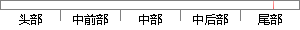

点击问卷操作列里的浏览问卷按钮，检查问卷内容是否包含非法信息，有则不通过审核，无则通过审核。
片段位置图

相似结果|
相似片段 1：就业办审核人员通过查看问卷内容，检查是否内容是否与题目相符，是否能够起到调查的目的等。5．如满足要求，就可点击发布按钮发布该份问卷。否则结束操作。6．问卷通过审核，成功发布、显示后，问卷审核的业务流程
|
※ 片段修改建议 ※
近似词参考：- 操作：操纵
- 浏览：阅读 欣赏 涉猎
- 检查：查抄 搜检
- 查问：盘问
- 是否：是不是
- 包含：包括 包罗 包孕 蕴含
- 非法：不法
- 审核：考核
- 通过：经由过程
- 审核：考核
系统自动生成语句： 点击问卷操纵列里的阅读问卷按钮，查抄问卷内容是不是包括不法信息，有则不经由过程考核，无则经由过程考核。
注：本片段修改建议为系统自动生成，仅供参考。